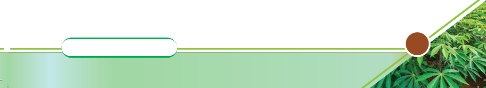

Criteria for feed selection
Livestock farmers must aim to prepare or purchase feeds of good quality, which
are cost-effective and meet the requirements of the animal. These feeds must
also be liked by the animal. In addition, they can be stored for a desired period.
Choosing what feed materials a livestock farmer can use for animals is a decision
that must be based on a good understanding of the following criteria:
(a) The nutritional requirements of the animals;
(b) The type of animal to be fed;
(c) Nutritional value of the available feedstuffs;
(d) Costs of the available feeds;
(e) Storage ability;
(f) Availability of feeds;
(g) Palatability and physical form of the feed; and
(h) Presence/Absence of anti-nutritional factors.
Livestock feeding systems
Livestock, particularly ruminants, are mainly fed outdoors or indoors. Outdoor
feeding involves pasture and rangeland. On the other hand, indoor feeding
involves feeding livestock with various feedstuffs in the stalls; hence, it is called
stall feeding. The pastures used in grazing ruminants may be natural or established
ones. In natural pastures, animals graze extensively and continuously while being
provided with water naturally from the rangeland. Sometimes, this system of
feeding is called continuous grazing. The established pastures are usually fenced
to make paddocks where animals are allowed to feed from one paddock to
another in rotation; hence, it is called rotational grazing. In this case, care should
be taken to ensure no poisonous plants and that the paddocks are not overgrazed.
Water troughs are constructed in the paddocks or at one drinking point. In the
stall-feeding system, forages and other feeds are provided in the feeding troughs,
while water is provided in the water troughs. The tethering grazing system is
sometimes practised in subsistence livestock farming.
Livestock feeding practices
Good livestock feeding practices must ensure proper feed use and maximise
productivity. Feeding practices take two forms: free choice (ad-lib feeding),
which is practised on young animals and fatteners to promote fast growth and